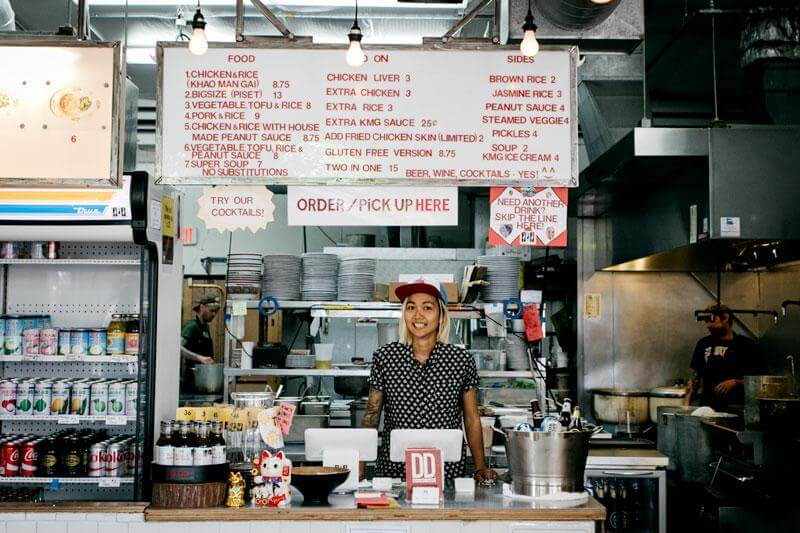
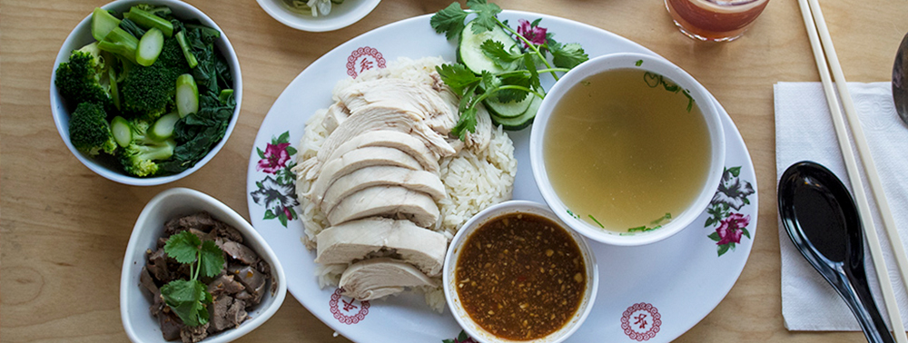
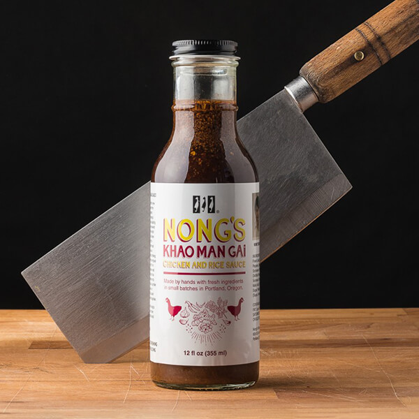
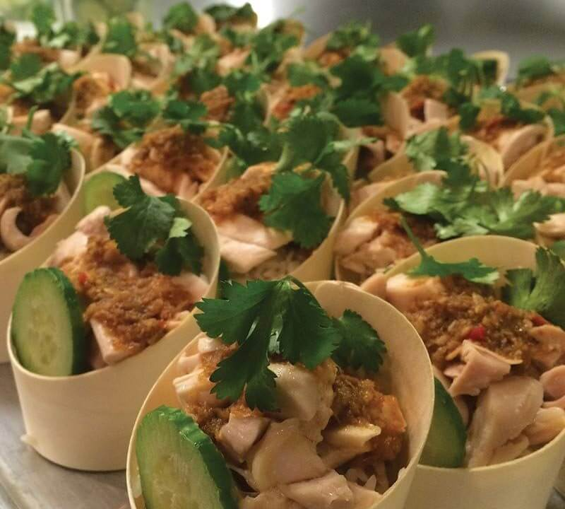

My name is Nong. It’s my nickname. I’m originally from Bangkok, Thailand. I moved to USA in 2003 with $70 and 2 suitcases and now Portland, Oregon is my home! I started with a foodcart that only served one thing: khao man gai. Now I have two restaurants, one in SE and one in SW and we serve a lot more than just our famous dish.

It is one of the most popular thai dishes that you can find almost everywhere in Thailand, especially Bangkok. The original khao man gai is from Hainan province, China. You can also find it called Hainanese chicken. It is chicken poached traditional cook with whole chicken. Then use the chicken broth to cook the rice with all aroma thaiherbs. We pair it with our famous that sauce and in thai style it cannot be complete without the some clear light taste soup to balance everything together also to clean your throat making to meal so enjoyable.

Made from fermented soy bean puree mix with garlic, ginger, thai chilies, vinegar and sugar. You can buy our sauce at any of the following retailers:

Nong’s spread can be adjusted to feed 20-500 people. We serve a create-your-own Nong’s bowl. Comes with up to three meat choices, steam broccoli, KMG rice(jasmine rice cooked in chicken stock and thai herbs),white rice or brown rice, pickles, boil eggs, Nong’s famous Khao Man Gai sauce (Gluten free available), house made peanut sauce(GF).
*20% SET UP AND DELIVERY FEE ADDED TO EACH ORDER
*24 HOURS ADVANCE NOTICE FOR ALL ORDERS
Send your details and we’ll get back to you within 24 hours:
Email us at nong@kmgpdx.com
Hello!
My name is Nong. It’s my nickname. I’m originally from Bangkok, Thailand. I moved to USA in 2003 with $70 and 2 suitcases and now Portland, Oregon is my home! I started with a foodcart that only served one thing: khao man gai. Now I have two restaurants, one in SE and one in SW and we serve a lot more than just our famous dish.
What is Khao Man Gai?
It is one of the most popular thai dishes that you can find almost everywhere in Thailand, especially Bangkok. The original khao man gai is from Hainan province, China. You can also find it called Hainanese chicken. It is chicken poached traditional cook with whole chicken. Then use the chicken broth to cook the rice with all aroma thaiherbs. We pair it with our famous that sauce and in thai style it cannot be complete without the some clear light taste soup to balance everything together also to clean your throat making to meal so enjoyable.
Nong's Sauce
Made from fermented soy bean puree mix with garlic, ginger, thai chilies, vinegar and sugar. You can buy our sauce at any of the following retailers:
Catering
Nong’s spread can be adjusted to feed 20-500 people. We serve a create-your-own Nong’s bowl. Comes with up to three meat choices, steam broccoli, KMG rice(jasmine rice cooked in chicken stock and thai herbs),white rice or brown rice, pickles, boil eggs, Nong’s famous Khao Man Gai sauce (Gluten free available), house made peanut sauce(GF).
*20% SET UP AND DELIVERY FEE ADDED TO EACH ORDER
*24 HOURS ADVANCE NOTICE FOR ALL ORDERS
Send your details and we’ll get back to you within 24 hours:
Email us at nong@kmgpdx.com